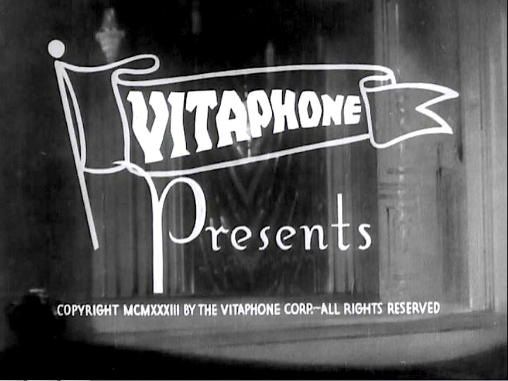

FMST 310. World Cinema Before Television.
An overview of world cinema(s)
as technology, commodity, and cultural form from cinema’s birth till the rise of television in the 1960s.
The course focuses on fictional, live-action, narrative cinema but also examines documentary, animated and experimental films through the concepts of genre, authorship, race, sexuality, gender, and spectatorship.

Schedule of Assignments
Open a PDF file link
Midterm Review Sheet. Open a PDF file linklink